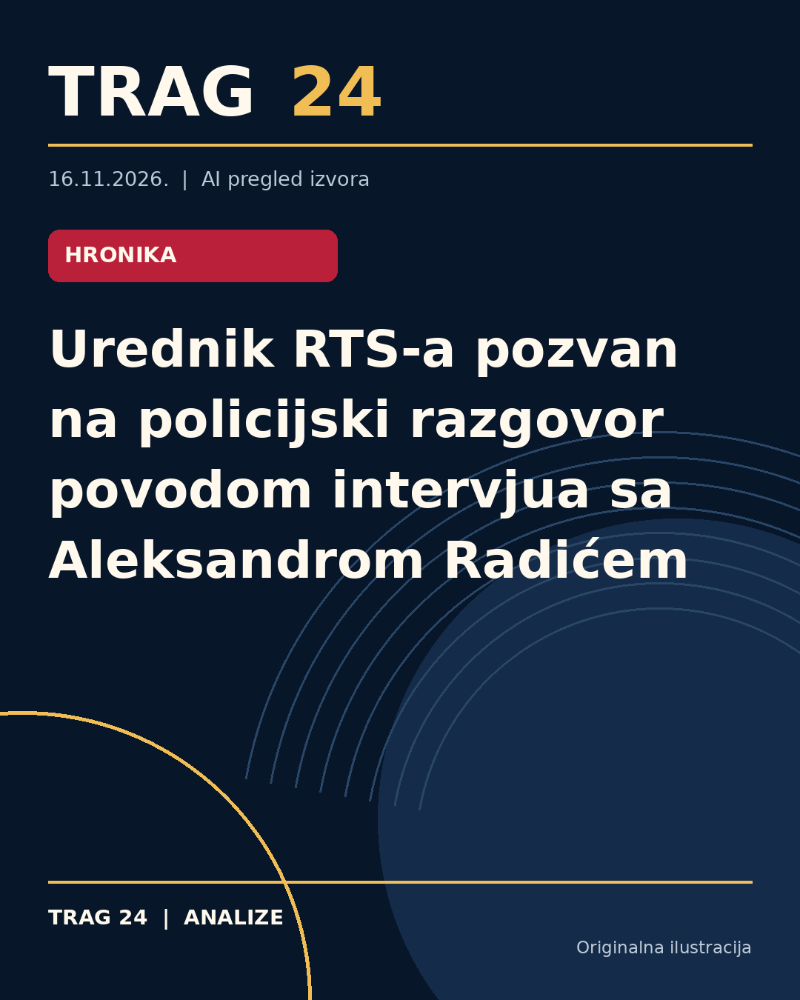

Urednik RTS-a pozvan na policijski razgovor povodom intervjua sa Aleksandrom Radićem

ŠTA SE DOGODILO
Borivoje Uskoković, vršilac dužnosti glavnog urednika Informativnog programa RTS-a, pozvan je da u utorak ujutru, u 7:30, dođe u svojstvu građanina na informativni razgovor u prostorije Ministarstva unutrašnjih poslova Srbije zbog intervjua koji je RTS emitovao 30. oktobra sa vojnim analitičarem Aleksandrom Radićem.
HRONOLOGIJA
Intervju sa Aleksandrom Radićem emitovan je 30. oktobra u Drugom dnevniku RTS-a. Radić je, prema raspoloživim informacijama, napustio Srbiju pre četiri meseca (krajem juna) i za njim je raspisana poternica. On je predmet predistražnog postupka koji vodi Više javno tužilaštvo u Beogradu, a koji se ticao optužbi o pripremanju dela protiv ustavnog uređenja i bezbednosti Srbije, kao i odavanja tajnih podataka. Uskoković je poziv za razgovor dobio od pripadnika Uprave kriminalističke policije na radnom mestu, na osnovu zahteva Višeg javnog tužilaštva.
ŠTA NAVODE IZVORI
Prema izveštajima Danasa, N1 i Kurira, poziv za saslušanje Borivoju Uskokoviću dostavljen je u vezi sa predistražnim postupkom u vezi sa objavljivanjem intervjua sa Aleksandrom Radićem. Navodi se da je Radić napustio Srbiju zbog straha za svoju bezbednost i krivičnih postupaka koji su vođeni protiv njega. MUP je, po nalogu tužilaštva, podneo krivičnu prijavu protiv Radića zbog optužbi vezanih za izjave o navodnoj upotrebi "zvučnog topa" tokom studentskih protesta 15. marta 2025. godine. Izvori ističu da Radićev stan i poslovni prostori nisu samo pretresani, nego su mu oduzeti telefoni i računari, te je bio predmet praćenja prikazanog na TV Informer. Poziv Uskokoviću je isključivo u svojstvu građanina, a ne u svojstvu novinara ili urednika.
ŠTA JE POTVRĐENO
Potvrđeno je da je Uskoković pozvan na razgovor u policiju u prostorijama MUP-a u Ulici Despota Stefana 107 u Beogradu na osnovu zahteva Višeg javnog tužilaštva u Beogradu. Intervju sa Radićem emitovan je 30. oktobra na RTS-u, a Radić je predmet predistražnog postupka i poternice. Postoji krivična prijava protiv Radića za navodna krivična dela pripremanja dela protiv ustavnog uređenja i odavanja tajnih podataka. Saslušanje Uskokovića je u svojstvu građanina i odnosi se na predistražni postupak koji je u toku.
ŠTA NIJE POTVRĐENO
Nije potvrđeno da je aspekt poziva Uskokovića direktno vezan za njegov rad kao urednika ili za uređivačke odluke na RTS-u. Takođe, nije potvrđeno da postoji bilo kakva optužnica ili zvaničan postupak protiv njega. Nije poznato i nisu dostupni detalji o sadržaju razgovora ili eventualnim daljim koracima tužilaštva u ovom predmetu. Nisu potvrđene tvrdnje o organizovanoj kriminalnoj grupi ili eventualnim hapšenjima kao posledici ovog slučaja.
ŠTA OSTАJE OTVORENO: Ostaje nepoznato kako će se razvijati predistražni postupak u odnosu na intervju i da li će biti pokrenute dodatne istražne ili sudske radnje prema urednicima ili medijskim kućama. Takođe, nije poznato da li će ovaj razgovor imati implikacije za medijski rad ili uređivačku politiku RTS-a, niti da li će se ovom prilikom pokrenuti druge pravne ili unutrašnje mere u vezi sa emitovanim intervjuom. Ostaje otvoreno kako će RTS i relevantne institucije postupiti dalje u ovom slučaju.
Izvori
- https://www.danas.rs/vesti/drustvo/urednik-informativnog-programa-rts-pozvan-na-razgovor-u-policiju-zbog-intervjua-sa-radicem/
- https://n1info.rs/vesti/rts-borivoje-uskokovic-pozvan-u-policiju-zbog-intervjua-sa-aleksandrom-radicem/
- https://www.kurir.rs/vesti/politika/10164074/borivoje-uskokovic-pozvan-na-razgovor-u-policiju
Ova analiza je pripremljena uz pomoć veštačke inteligencije na osnovu javno dostupnih izvora. Navodi izvora nisu nužno nezavisno potvrđeni.